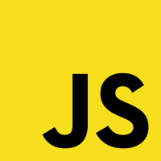
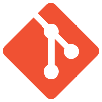

html
Hypertext Markup Language (HTML) is the standard markup language for documents designed to be displayed in a web browser. It can be assisted by technologies such as Cascading Style Sheets (CSS) and scripting languages such as JavaScript.
Web browsers receive HTML documents from a web server or from local storage and render the documents into multimedia web pages. HTML describes the structure of a web page semantically and originally included cues for the appearance of the document.
HTML elements are the building blocks of HTML pages. With HTML constructs, images and other objects such as interactive forms may be embedded into the rendered page. HTML provides a means to create structured documents by denoting structural semantics for text such as headings, paragraphs, lists, links, quotes and other items. HTML elements are delineated by tags, written using angle brackets. Tags such as img and input directly introduce content into the page. Other tags such as p surround and provide information about document text and may include other tags as sub-elements. Browsers do not display the HTML tags, but use them to interpret the content of the page.
HTML can embed programs written in a scripting language such as JavaScript, which affects the behavior and content of web pages. Inclusion of CSS defines the look and layout of content. The World Wide Web Consortium (W3C), former maintainer of the HTML and current maintainer of the CSS standards, has encouraged the use of CSS over explicit presentational HTML since 1997.

css
Cascading Style Sheets (CSS) is a style sheet language used for describing the presentation of a document written in a markup language such as HTML. CSS is a cornerstone technology of the World Wide Web, alongside HTML and JavaScript.
CSS is designed to enable the separation of presentation and content, including layout, colors, and fonts. This separation can improve content accessibility, provide more flexibility and control in the specification of presentation characteristics, enable multiple web pages to share formatting by specifying the relevant CSS in a separate .css file which reduces complexity and repetition in the structural content as well as enabling the .css file to be cached to improve the page load speed between the pages that share the file and its formatting.
Separation of formatting and content also makes it feasible to present the same markup page in different styles for different rendering methods, such as on-screen, in print, by voice (via speech-based browser or screen reader), and on Braille-based tactile devices. CSS also has rules for alternate formatting if the content is accessed on a mobile device.
The name cascading comes from the specified priority scheme to determine which style rule applies if more than one rule matches a particular element. This cascading priority scheme is predictable.
The CSS specifications are maintained by the World Wide Web Consortium (W3C). Internet media type (MIME type) text/css is registered for use with CSS by RFC 2318 (March 1998). The W3C operates a free CSS validation service for CSS documents.
In addition to HTML, other markup languages support the use of CSS including XHTML, plain XML, SVG, and XUL.

javascript
JavaScript (/ˈdʒɑːvəˌskrɪpt/), often abbreviated as JS, is a programming language that conforms to the ECMAScript specification. JavaScript is high-level, often just-in-time compiled, and multi-paradigm. It has curly-bracket syntax, dynamic typing, prototype-based object-orientation, and first-class functions.
Alongside HTML and CSS, JavaScript is one of the core technologies of the World Wide Web. JavaScript enables interactive web pages and is an essential part of web applications. The vast majority of websites use it for client-side page behavior, and all major web browsers have a dedicated JavaScript engine to execute it.
As a multi-paradigm language, JavaScript supports event-driven, functional, and imperative programming styles. It has application programming interfaces (APIs) for working with text, dates, regular expressions, standard data structures, and the Document Object Model (DOM).
The ECMAScript standard does not include any input/output (I/O), such as networking, storage, or graphics facilities. In practice, the web browser or other runtime system provides JavaScript APIs for I/O.
JavaScript engines were originally used only in web browsers, but they are now core components of other runtime systems, such as Node.js and Deno. These systems are used to build servers and are also integrated into frameworks, such as Electron and Cordova, for creating a variety of applications.
Although there are similarities between JavaScript and Java, including language name, syntax, and respective standard libraries, the two languages are distinct and differ greatly in design.

bash
Bash is a Unix shell and command language written by Brian Fox for the GNU Project as a free software replacement for the Bourne shell. First released in 1989, it has been used as the default login shell for most Linux distributions. A version is also available for Windows 10 via the Windows Subsystem for Linux. It is also the default user shell in Solaris 11. Bash was also the default shell in all versions of Apple macOS prior to the 2019 release of macOS Catalina, which changed the default shell to zsh, although Bash currently remains available as an alternative shell.
Bash is a command processor that typically runs in a text window where the user types commands that cause actions. Bash can also read and execute commands from a file, called a shell script. Like all Unix shells, it supports filename globbing (wildcard matching), piping, here documents, command substitution, variables, and control structures for condition-testing and iteration. The keywords, syntax, dynamically scoped variables and other basic features of the language are all copied from sh. Other features, e.g., history, are copied from csh and ksh. Bash is a POSIX-compliant shell, but with a number of extensions.
The shell's name is an acronym for Bourne Again Shell, a pun on the name of the Bourne shell that it replaces and the notion of being "born again".
A security hole in Bash dating from version 1.03 (August 1989), dubbed Shellshock, was discovered in early September 2014 and quickly led to a range of attacks across the Internet. Patches to fix the bugs were made available soon after the bugs were identified.
git
Git (/ɡɪt/) is software for tracking changes in any set of files, usually used for coordinating work among programmers collaboratively developing source code during software development. Its goals include speed, data integrity, and support for distributed, non-linear workflows (thousands of parallel branches running on different systems).
Git was created by Linus Torvalds in 2005 for development of the Linux kernel, with other kernel developers contributing to its initial development. Since 2005, Junio Hamano has been the core maintainer. As with most other distributed version control systems, and unlike most client–server systems, every Git directory on every computer is a full-fledged repository with complete history and full version-tracking abilities, independent of network access or a central server. Git is free and open-source software distributed under GNU General Public License Version 2.
